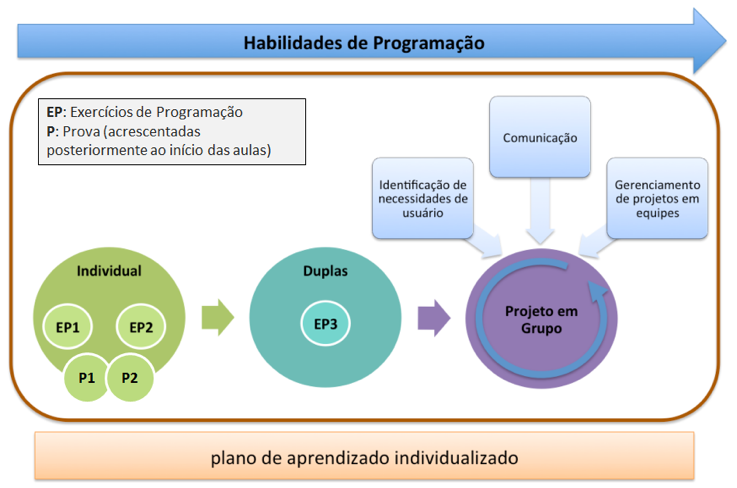
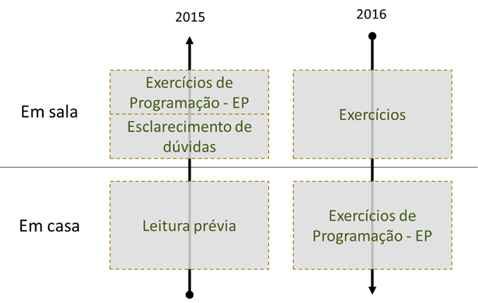
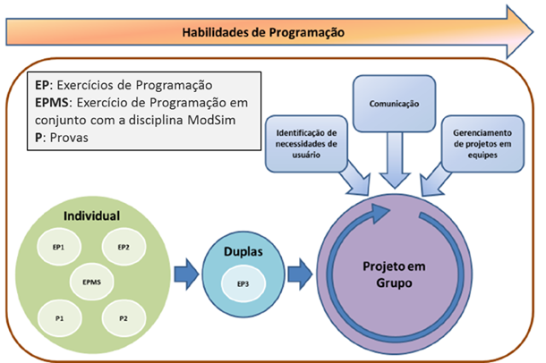

Concepção da disciplina
O escopo da disciplina faz parte das diretrizes curriculares da Engenharia, segundo as quais os alunos precisam ter contato com informática. Dado que esse era um requisito obrigatório, a ideia foi fazer o melhor possível com essa oportunidade.
O desenho da disciplina foi baseado na experiência da Olin College. Lá, os alunos trabalham com bastante autonomia e os professores fazem uso intenso das metodologias de projeto e de flipped classroom. Uma diferença é que em Olin a disciplina é optativa e, no Insper, a disciplina é obrigatória.
O objetivo principal em Design de Software é capacitar os alunos a desenvolverem um projeto de média complexidade em um período relativamente curto de tempo. Em termos gerais, a disciplina garante uma boa cobertura dos conceitos básicos de programação para um Engenheiro.
Objetivo da disciplina
Ao final desta disciplina o aluno será capaz de programar e depurar programas de média complexidade em uma linguagem de programação orientada a objetos, sendo capaz de aplicar esses conhecimentos na solução de problemas práticos, identificando as necessidades de um usuário, e desenvolvendo a heurística para resolver os requisitos do cliente. Os alunos praticarão técnicas de gestão de projetos de software, fortalecendo a habilidade de trabalhar em equipe.
Ementa
Conceitos Básicos de Algoritmos; Técnicas de Projeto de Software; Fundamentos de Programação e Linguagens de Programação (variáveis, expressões, comandos, estruturas de decisão e estruturas de repetição, manipulação de dados estruturados, funções e classes); Resolução Algorítmica de Problemas; Desenvolvimento de Programas; Linguagens de Programação; Técnicas de Planejamento e Gerenciamento de Software; Documentação.
Primeira edição da disciplina.
| Tópicos | Status | Resumo |
|---|---|---|
| Competências gerais | Redução do escopo da disciplina; originalmente os objetivos gerais eram muito ambiciosos. | |
| Objetivos de aprendizagem | Redução do escopo da disciplina; originalmente os objetivos de aprendizagem eram muito ambiciosos. | |
| Dinâmicas | Adaptação à pouca autonomia dos alunos; Exercícios de Programação - EP passaram a ser resolvidos em casa pelos alunos, e não mais em sala. | |
| Avaliação do Aprendizado | Criação de atividade em conjunto com a disciplina Modelagem e Simulação do Mundo Físico (ModSim); remanejamento das datas de aplicação das provas para manter engajamento dos alunos. | |
| Produto | Não houve alteração da proposta |
2015/1
Competências
| Competência | Missão | Descrição |
|---|---|---|
| Conhecimento Técnico |
|
O objetivo da disciplina é capacitar os alunos a codificar e depurar programas de computador individualmente e em grupos, identificando as necessidades de usuários, e desenvolvendo heurísticas para resolver os requisitos funcionais e não-funcionais de um programa. O aluno trabalhará em projetos de desenvolvimento de software gerais simples e em um projeto principal proposto pelo grupo, que deve se mostrar interessante para um possível investidor, e que também deve ser submetido a usuários para que seja feita validação, revisão e documentação do projeto. Para isso, técnicas de gestão de projeto de software serão praticadas durante o curso. |
| Design |
|
|
| Empreendedorismo |
|
|
| Aprender a Aprender |
|
|
| Habilidades Interpessoais |
|
|
| Consciência do Contexto |
|
Objetivos de Aprendizagem
Essenciais
- Desenvolver programas de computador.
- Identificar e implementar estratégias algorítmicas computacionais.
- Atuar em uma equipe autogerenciada de desenvolvimento por métodos ágeis.
Complementares
- Identificar requisitos de mercado com técnicas de design.
- Desenvolver interfaces gráficas de usuários.
- Julgar e priorizar seu aprendizado da disciplina.
Dinâmicas
Teoria x Prática
As partes teórica e prática de programação foram trabalhadas de maneira bastante integrada ao longo de toda a disciplina, que foi estruturada para que os alunos adquirissem as competências necessárias para desenvolvimento do projeto final.
Os alunos desenvolveram exercícios de programação em todas as aulas, que eram divididas em dois blocos de 2h cada. Cada bloco seguiu aproximadamente a seguinte dinâmica:
- 1ª Parte: exposição curta de conteúdos
- 2ª Parte: desenvolvimento dos Exercícios de Programação - EP
Além disso, gostariam que os alunos tivessem mais autonomia na gestão do seu próprio aprendizado. Segundo eles, uma solução possível talvez fosse acrescentar mais momentos de questionamento.
Paralelamente aos exercícios em sala, os alunos desenvolveram três projetos intermediários durante as primeiras dez semanas da disciplina. Muitos alunos, inclusive, selecionaram esses projetos para apresentação na Expo Engenharia, o que mostra sua satisfação com o resultado final.
| 2º Semana de Aula | 6º Semana de Aula | 9-10º Semanas de Aula |
|---|---|---|
Jogo Jokenpô "a la Big Bang Theory" - tesoura, papel, pedra, lagarto e Spock |
Jogo da forca com gráficos e outros recursos |
Gerenciador nutricional |
Integração com a Disciplina Simulação do Mundo Físico (ModSim)
Houve momentos na disciplina ModSim em que os alunos precisaram de conceitos de programação que ainda não haviam sido trabalhados em Design de Software.
Ninjas
Para acompanhar e auxiliar os alunos nas atividades, a disciplina contou com dois “ninjas”, monitores da disciplina. Nessa primeira edição, os ninjas eram alunos da Olin College.
Avaliação do Aprendizado
Principais Instrumentos de Avaliação
No framework da disciplina, disponibilizada aos alunos no Programa de Aprendizagem, estão indicadas as principais atividades avaliativas:

Trabalho em Equipe
Os professores optaram, em um primeiro momento, em não avaliar o Trabalho em Equipe na disciplina, uma vez que os alunos não eram diferenciados nessa competência em termos de conceito.
Avaliação de Competências Individuais
Ao longo da disciplina, os professores começaram a sentir falta de componentes que permitissem avaliar, individualmente, o desempenho dos alunos nos objetivos de aprendizagem essenciais e complementares.
A solução encontrada foi acrescentar à disciplina duas provas individuais (P1 e P2). As provas foram similares às dinâmicas feitas durante as aulas, com problemas de programação simples e médios.
“Muitos alunos não têm capacidade de autorreflexão. Eles não tentam (atingir os objetivos dos desafios propostos aula a aula) ou tentam um pouco e, se não conseguem, logo desistem; não vão ao atendimento e, de alguma forma, acham que estão indo bem na disciplina. Eles não relacionam o andamento no dia a dia com o seu desenvolvimento na disciplina. Nesse sentido, a prova ajuda a dar um respaldo para o professor. (...) Para a segunda prova, os alunos pediram lista de exercícios para ‘estudar’. Ainda assim, não estudaram. (...) Sonho é não ter prova ou ter prova prática.”
Rubrics
Originalmente, cada objetivo de aprendizagem possuía um rubric próprio (grade de correção). No rubric, os objetivos de aprendizagem eram desmembrados em sub-objetivos e, para cada um, havia um descritivo que permitia avaliar em qual grau de proficiência o aluno estava (Insatisfatório, Em desenvolvimento, Essencial, Proficiente e Avançado).
Uma vez que cada atividade era associada a um objetivo de aprendizagem, em um primeiro momento os professores tentaram avaliar essas atividades a partir dos próprios rubrics dos objetivos. Na prática, isso se mostrou um problema, já que atividades mais “simples”, por exemplo, não contemplavam todos os sub-objetivos de um dado objetivo de aprendizagem.
Por fim, os professores desenvolveram um rubric específico por atividade a ser avaliada.
"Problema é que isso (rubric dos objetivos de aprendizagem) só era mais fácil de avaliar no projeto final. Nos demais projetos, não era tão fácil. Ficou muito granular.”
O feedback aos alunos era dado uma semana após a atividade, no máximo após quinze dias. Para os professores, seria interessante ter mecanismos para dar um feedback contínuo, não apenas por “peças de avaliação”.
Produto
O principal produto da disciplina Design de Software foi o projeto final, para o qual os alunos se dedicaram por seis semanas e meia.
A cada aula o professor da disciplina dedicava cerca de dez minutos para acompanhar cada grupo de trabalho. Nesse momento, eles apresentavam o “Scrum” do que estava sendo feito na semana e discutiam com o professor.
Exemplos de projetos:
- Comando eletrônico de pedido em lanchonete via celular
- Gestor de finanças pessoais
- Redes sociais a partir dos gostos pessoais dos inscritos
- Gerenciador de música que toca em balada
- Jogos (corrida, luta, "super-trunfo")
- Reconhecimento facial
- Mapa das salas da Engenharia (agenda de aula por aluno)
- Aula de guitarra com instrumento real
- Filtro de e-mails com "conselheiros" para mediar conversar
2016/1
Resumo das Principais Alterações
- Competências gerais: redução do escopo da disciplina; originalmente os objetivos gerais eram muito ambiciosos.
- Objetivos de Aprendizagem: redução do escopo da disciplina; originalmente os objetivos de aprendizagem eram muito ambiciosos.
- Dinâmicas: adaptação à pouca autonomia dos alunos; Exercícios de Programação - EP passaram a ser resolvidos em casa pelos alunos, e não mais em sala.
- Avaliação do Aprendizado: criação de atividade em conjunto com a disciplina Modelagem e Simulação do Mundo Físico (ModSim); remanejamento das datas de aplicação das provas para manter engajamento dos alunos.
Competências Gerais
O objetivo da disciplina é capacitar os alunos a codificar e depurar programas de computador individualmente e em grupos, identificando as necessidades de usuários, e desenvolvendo heurísticas para resolver os requisitos funcionais e não-funcionais de um programa. O aluno trabalhará em projetos de desenvolvimento de software gerais simples e em um projeto principal proposto pelo grupo, que deve se mostrar interessante para um possível investidor, e que também deve ser submetido a usuários para que seja feita validação, revisão e documentação do projeto. Para isso, técnicas de gestão de projeto de software serão praticadas durante o curso.
O objetivo da disciplina é capacitar os alunos a codificar e depurar programas de computador, individualmente e em grupos, identificando necessidades funcionais e desenvolvendo heurísticas para a resolução de requisitos. O aluno trabalhará em projetos de desenvolvimento de software simples e em um projeto principal proposto pelo grupo, e que também deve ser submetido a validação, revisão e documentação do projeto. Para isso, técnicas elementares de gestão de projeto de software serão praticadas durante o curso.
[ ] Na primeira edição, professores foram um pouco "ambiciosos" em passar técnicas de projetos de software para os alunos. Na segunda edição, acharam melhor simplificar o processo de desenvolvimento. Embora a disciplina passe por requisitos não-funcionais, eles não são abordados em profundidade. Além disso, os alunos de Engenharia da Computação terão isso mais a fundo na disciplina Desenvolvimento Colaborativo Ágil (3º período).
[ ] Logisticamente é complicado encontrar usuários reais para todos os grupos. Além disso, alunos nesse momento ainda não passaram pela experiência de fazer um projeto completo.
Na disciplina Co-Design de Aplicativos (2º período) alunos terão a experiência de desenvolver um projeto com clientes reais. Nessa oportunidade, eles já terão passado por dois ou mais ciclos de desenvolvimento de projeto cuja natureza intrínseca poderia ter sido feita com cliente: Design de Software (1º período), ainda que nesse momento, o “cliente” seja o próprio professor; e Natureza do Design (1º período), em que o projeto final dos alunos é testado por crianças.
Objetivos de Aprendizagem
Essenciais
- Desenvolver programas de computador.
- Identificar e implementar estratégias algorítmicas computacionais.
- Atuar em uma equipe autogerenciada de desenvolvimento por métodos ágeis.
Complementares
- Identificar requisitos de mercado com técnicas de design.
- Desenvolver interfaces gráficas de usuários.
- Julgar e priorizar seu aprendizado da disciplina.
Essenciais
- Desenvolver programas de computador.
- Identificar e implementar estratégias algorítmicas computacionais.
- Autogerenciar uma equipe de desenvolvimento.
Complementares
- Identificar requisitos com técnicas de design.
- Desenvolver interfaces gráficas de usuários.
- Julgar e priorizar seu aprendizado da disciplina.
[ ] A adaptação do objetivo aconteceu devido à necessidade de reduzir o escopo da disciplina, pois era impossível abordar tudo em profundidade. A disciplina trabalhou métodos ágeis, mas ainda superficialmente, não o suficiente para o aluno adquirir a competência.
Outro ponto é que há disciplinas que só tratam disso: Desenvolvimento Colaborativo Ágil (3º período) do curso de Engenharia da Computação e Design para Manufatura (3º período) no curso de Engenharia Mecânica.
Dinâmicas
Teoria x Prática
Na primeira metade do curso da primeira edição da disciplina, foi adotada uma linha de, em sala de aula, complementar o entendimento dos alunos referente à leitura que deveria ter sido feita previamente e, em sala, desenvolver os Exercícios de Programação - EP.
Na segunda edição da disciplina, uma vez que as leituras prévias também não funcionaram bem e os alunos não estavam maduros o suficiente para adotar uma postura mais ativa, os professores inverteram a ordem e passaram a trabalhar muitos exercícios em sala de aula, deixando os EPs para serem desenvolvidos fora de sala.
Em termos de dinâmicas, de modo geral, a segunda metade do curso foi igual em ambas as edições.
Integração com a Disciplina Simulação do Mundo Físico (ModSim)
A ordem dos conteúdos da disciplina precisou ser ajustada para se adaptar às necessidades de ModSim, de modo que os alunos tivessem subsídio de programação nos projetos desenvolvidos na outra disciplina.
Ninjas
Ao contrário da primeira edição da disciplina, que contava com ninjas alunos de Olin, em 2016 os ninjas foram alunos da turma anterior e esse contato foi bastante motivador para a turma, principalmente em relação ao projeto final da disciplina
Avaliação do Aprendizado
Principais Instrumentos de Avaliação
No framework da disciplina, disponibilizada aos alunos no Programa de Aprendizagem, estão indicadas as principais atividades avaliativas:

Trabalho em Equipe
Nesta edição da disciplina os professores ainda focaram em questões mais simples de Trabalho em Equipe, mas para a próxima, gostariam de algo mais estruturado, para fornecer mais base para os alunos nessa competência.
Avaliação de Competências Individuais
Originalmente a disciplina não previa provas individuais, no entanto, ambas foram implementadas já na primeira edição da disciplina e mantidas na segunda edição.
“Se você faz um curso sem que ele tenha uma prova para avaliar os alunos, só com atividades que eles fazem parte em sala de aula, parte em casa, você acaba tendo dificuldade para avaliar as competências individuais.”
Na primeira edição da disciplina, alguns alunos, sabendo que já não passariam na disciplina, deixaram de contribuir com os grupos de trabalho. Em 2016 o calendário das provas foi remanejado e a P2 foi deixada para o final da disciplina, de modo que, durante o desenvolvimento dos projetos em grupo, todos os alunos ainda tivessem chances de passar na disciplina.
Rubrics
Provas foram avaliadas com notas que, depois, eram convertidas em conceitos, de acordo com os respectivos rubrics. Problema de usar rubric é que cada rubric é associado a um objetivo de aprendizagem e um mesmo instrumento de avaliação avalia mais de um objetivo. Às vezes, uma mesma questão avalia mais de um objetivo.
“No meu entender, a prova não deveria ter valor único de avaliação, mas uma lista de resultados: ‘Na dimensão X você obteve conceito Y, na dimensão A você obteve conceito B etc.’. Se o aluno domina o objetivo A e falha no objetivo B, ele é um aluno aprovado? (...) Mas temos que trabalhar dentro dos limites do sistema, e nós temos dificuldade em converter essa nota, que é um vetor de notas, em um valor único. Quantos pontos eu dou para satisfação do objetivo A e quantos pontos eu dou para a satisfação do objetivo B?”
Integração com a Disciplina Simulação do Mundo Físico (ModSim)
Foi criado um novo exercício de programação integrado à disciplina ModSim - EPMS. Com um único trabalho comum às duas disciplinas, ideia era realizar uma avaliação integrada, que abarcasse os objetivos de aprendizagem de ambas.
Produto
Assim como na primeira edição, o principal produto da disciplina Design de Software foi o projeto final.
Depoimentos de Alunos
Jean Luca, Turma 2016/1